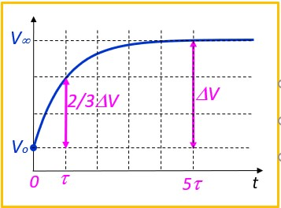

Transitoires dans les cellules RC/CR
Introduction
Quand on applique un signal impulsionnel à une cellule RC ou CR, il n'est pas toujours evident de prévoir et calculer l'allure du signal de sortie
Nous allons apprendre quelques règles simples qui permettre d'atteindre cet objectif sans ce lancer dans des calculs fastidieux
RC, CR, quelle est la différence ?
En réalité, c'est le même circuit, mais pour simplifier, on fait deux approches distinctes et utiliser des règles propres à chaque cas
- Si Ve est appliquée sur R, nous parlerons de cellule RC
- Si Ve est appliquée sur C, nous parlerons de cellule CR
Règle du Repos
Avant le début ou après la fin d'un phase transitoire (charge/décharge), le circuit et à l'état de repos. Le courant dans la résistance R est nul, on a La même tension des deux cotés de R
Règle de la Cellule RC
Dans un circuit RC, au repos, Vs = Ve, ensuite, chaque fois que Ve 'saute' vers une nouvelle valeur, Vs la suit exponentiellement (charge/décharge) avec la constante de temps τ = RC
Règle de la Cellule CR
Dans un circuit CR, au repos, Vs = VR (tension de l'autre coté de R). Ensuite, chaque fois que Ve 'saute' de ΔV, Vs saute du même saut ΔV, ensuite elle revient exponentiellement à l'état de repos (VR ) avec la constante de temps τ = RC,
Règle de l'exponentielle
L'équation de charge ou de décharge d'un condensateur dans le cas général est :
$$ V(t) = V_\infty - (V_\infty - V_0)e^{-\frac{t}{τ}}$$ - Excursion totale : \( ΔV = V_\infty - V_0 \)
- À l'instant τ, le signal a parcouru ≈ les 2/3 de ΔV
- À l'instant 5τ, le signal a parcouru la totalité de ΔV
Exemple 1, RC
Dessiner le signal de sortie Vs et calculer ses valeurs aux instants remarquables
Solution :
- On commence par calculer la constante de temps,\(τ = RC = 10 \times 10^3 \times 100 \times 10^{-9} = 1 ms \)
- Entre 0 et l'instant to, on est au repos, donc Vs = Ve = 4V
- à l'instant to, Ve passe à 10V, Vs la suit exponentiellement. On commence à la tracer
grossièrement au crayon, on affinera les calculs plus tard,
- to devient l'origine des temps de l'exponentielle
- la valeur Initiale est Vo = 4V, la valeur finale est V∞ = 10V
- A l'instant τ = 1ms, elle aura traversé les 2/3 de ΔV
- Les choses ne continue pas comme ça, à l'instant t1, Ve passe à -5V, Vs la suit
exponentiellement, Pour tracer approximativement :
- On note E1 la valeur de Vs à l'instant t1, L'excursion totale est: ΔV = E1 - (-5)
- t1 devient l'origine des temps de cet intervalle, à l'instant τ, la capa s'est déchargée de 2/3ΔV. Ceci permet de tracer grossièrement l'exponentielle de la décharge
-
A l'instant t2, Ve passe à 0V, Vs la suit exponentiellement, Pour tracer approximativement :
- On note E2 la valeur de Vs à l'instant t2, L'excursion totale est: ΔV = 0 - E2
- t2 devient l'origine des temps de cet intervalle, à l'instant τ, la capa s'est chargée de 2/3ΔV. Ceci permet de tracer grossièrement l'exponentielle de la charge
- Calcul de E1:
- Il faut déterminer l'équation de l'exponentielle dans l'intervalle [to, t1] en utilisant la règle de l'exponentielle
- On place le 0 des temps en to, Vo = 4V, V∞ = 10V
- \( V_s(t) = 10 - (10 - 4)e^{-\frac{t}{1\,ms}} \)
- \( E_1 = 10 - (10 - 4)e^{-\frac{2\,ms}{1\,ms}} = 9.188V\)
- Calcul de E2:
- Il faut déterminer l'équation de l'exponentielle dans l'intervalle [t1, t2]
- On place le 0 des temps en t1, Vo = E1, V∞ = -5V
- \( V_s(t) = -5 - (-5 - 9.188)e^{-\frac{t}{1\,ms}} \)
- \( E_2 = -5 - (-5 - 9.188)e^{-\frac{3\,ms}{1\,ms}} = -4.29V\)
- Maintenant on peut ajuster le dessin si c'est nécessaire
Exemple 2, CR

Dessiner le signal de sortie Vs et calculer ses valeurs aux instants remarquables
Solution :
- On commence par calculer la constante de temps,\(τ = RC = 10 \times 10^3 \times 100 \times 10^{-9} = 1 ms \)
- L'état de repos de Vs est égal à 0V (règle du repos), entre 0 et to Vs = 0V
- Al'instant to, Ve saute de 6V vers le haut, Vs en fait de même et passe à E1 = 0 + 6V = 6V.
Ensuite Vs revient exponentiellement vers 0V (valeur de repos).
Vo = 6V, V∞ = 0V ⇒ \( V_s(t) = 0 - (0 - 6)e^{-\frac{t}{1\,ms}} \)
\( E_2 = 6 e^{-\frac{2\,ms}{1\,ms}} = 0.812V\) - A l'instant t1, Ve saute 15V vers le bas, Vs en fait de même et arrive à E3 = E2 - 15 = -14.188V
Ensuite Vs revient exponentiellement vers 0V (valeur de repos).
Vo = -14.188V, V∞ = 0V ⇒ \( V_s(t) = 0 - (0 + 14.188)e^{-\frac{t}{1\,ms}} \)
\( E_3 = -14.188 e^{-\frac{3\,ms}{1\,ms}} = -0.7V\) - A l'instant t2, Ve saute 5V vers le haut, Vs en fait de même et arrive à E4 = E3 + 5 = 4.3V
Ensuite Vs revient exponentiellement vers 0V (valeur de repos).
Vo = 4.3V, V∞ = 0V ⇒ \( V_s(t) = 0 - (0 - 4.3)e^{-\frac{t}{1\,ms}} \; = \; 4.3e^{-\frac{t}{1\,ms}}\)
Exemple 3, RC Thévenin
Dessiner le signal de sortie Vs et calculer ses valeurs aux instants remarquables
Solution :
- On commence par remplacer les deux résistances par leur schéma équivalent de Thévenin pour obtenir une cellule RC normale. (Voir paragraphe sur Théorème de Thévenin)
- Req = R1 // R2 = 6K
- Veq = (R2 Ve + R1 Vr) / (R1 + R2) = 0.6 Ve + 2V
- Ve est définie par morceaux, nous allons faire de même pour Veq
- Ve = 0 ⇒ Veq = 2V
- Ve = 10 ⇒ Veq = 8V
- Maintenant on fait l'étude de la cellule RC en faisant attention de prendre Veq comme signal d'entrée
- On commence par calculer la constante de temps,\(τ = Req C = 6 \times 10^3 \times 10 \times 10^{-9} = 60 µs \)
- Entre 0 et to, on est au repos, donc Vs = Veq = 2V
- à l'instant to, Veq passe à 8V, Vs la suit exponentiellement
On place le 0 des temps en to. Vo = 2V, V∞ = 8V
\( V_s(t) = 8 - (8 - 2)e^{-\frac{t}{60\,µs}} \) , à l'instant t= 100 µs, Vs atteint la valeur E
\( E = 8 - 6e^{-\frac{100\,µs}{60\,µs}} \; = \; 6.87V\) - à l'instant t1, Veq passe à 2V, Vs la suit exponentiellement
On place le 0 des temps en t1. Vo = 6.87V, V∞ = 2V
\( V_s(t) = 2 - (2 - 6.87)e^{-\frac{t}{60\,µs}} \; = \; 2 + 4.87e^{-\frac{t}{60\,µs}}\)

Exemple 4, CR Thévenin
Dessiner le signal de sortie Vs et calculer ses valeurs aux instants remarquables
Solution :
- On commence par remplacer les deux résistances par leur schéma équivalent de Thévenin pour obtenir une cellule CR normale. (Voir paragraphe sur Théorème de Thévenin)
- Req = R1 // R2 = 7.5K
- Veq = R2 Vr / (R1 + R2) = 3.75V
- Entre 0 et to, on est au repos, donc Vs = Veq = 3.75V
- A l'instant to, Ve saute de 10V vers le haut, Vs en fait de même et passe à E1 = 3.75V + 10V =
13.75V.
Ensuite Vs revient exponentiellement vers 3.75V (valeur de repos).
Vo = 13.75V, V∞ = 3.75V
\( V_s(t) = 3.75 - (3.75 - 13.75)e^{-\frac{t}{75\,µs}} \)
\( V_s(t) = 3.75 + 10e^{-\frac{t}{75\,µs}} \)
\( E_2 = 3.75 + 10 e^{-\frac{100\,µs}{75\,µs}} = 6.39V\) - A l'instant t1, Ve saute de 10V vers le bas, Vs en fait de même et arrive à E3 = E2 - 10 =
-3.61V
Ensuite Vs revient exponentiellement vers 3.75V (valeur de repos).
Vo = -3.61V, V∞ = 3.75V
\( V_s(t) = 3.75 - (3.75 + 3,61)e^{-\frac{t}{75\,µs}} \)
\( V_s(t) = 3.75 - 7.36e^{-\frac{t}{75\,µs}} \)